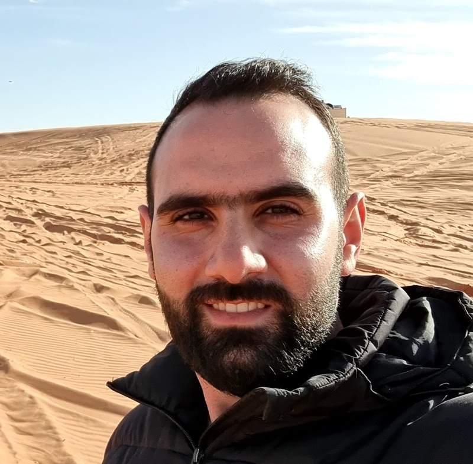

Clinical Engineering
- Medical equipment maintenance
- Calibration and functional verification
- Technical troubleshooting
- Preventive-maintenance procedures
- Equipment safety and documentation
- Technical support for healthcare personnel
Biomedical Engineer
Biomedical engineer with more than five years of experience in hospital medical technology. I combine clinical engineering experience with robotics, embedded systems, ROS 2, simulation and digital-twin development.
View my projects GitHub profile LinkedIn Download CV
I hold bachelor's and master's degrees in biomedical engineering and have more than five years of professional experience working with medical equipment in a hospital environment.
My work and research interests include medical devices, robotic systems, embedded sensing, ROS 2, Unity, artificial intelligence and digital twins for healthcare and rehabilitation applications.
Södersjukhuset · Stockholm, Sweden
January 2018 – Present
More than five years of experience supporting medical technology in a hospital environment. Full-time from 2018 through 2021, followed by hourly and consulting assignments.
Graduate-level education focusing on biomedical technology, engineering research, robotic systems and digital-twin development.
Biomedical Engineering · Robotics · Medical Technology
Foundational engineering education covering medical instrumentation, electronics, physiological systems, measurement technology and healthcare applications.
Medical Devices · Electronics · Instrumentation
Robotic Phantom Knee Digital Twin: development of a physical robotic test platform integrated with embedded sensors, ROS 2 and Unity.
Research · Embedded Systems · Digital Twins
View official publication →
Development of a robotic knee test platform integrating physical actuators, embedded sensors, ROS 2 and a Unity-based digital twin for real-time control, simulation and validation.
Biomedical Robotics · ROS 2 · Raspberry Pi · Unity · Digital Twins
View project → Watch demo →Professional experience with maintenance, calibration and troubleshooting of critical medical equipment.
Clinical Engineering · Safety · Maintenance
View experience →I am interested in opportunities involving biomedical engineering, medical devices, robotics and research and development.
Email: wajih.habrah@hotmail.com
GitHub: WajihHabrah
LinkedIn: Wajih Habrah
CV: View my CV